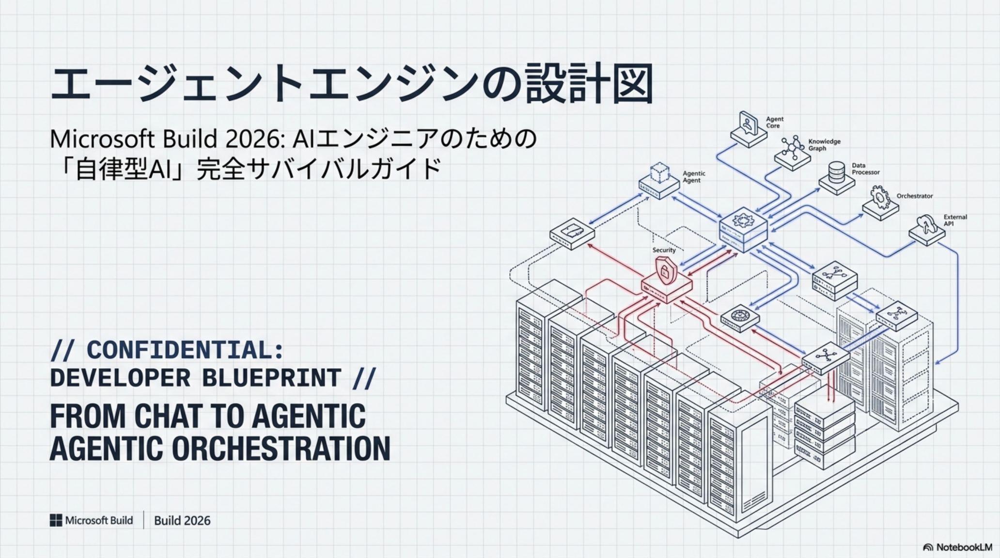
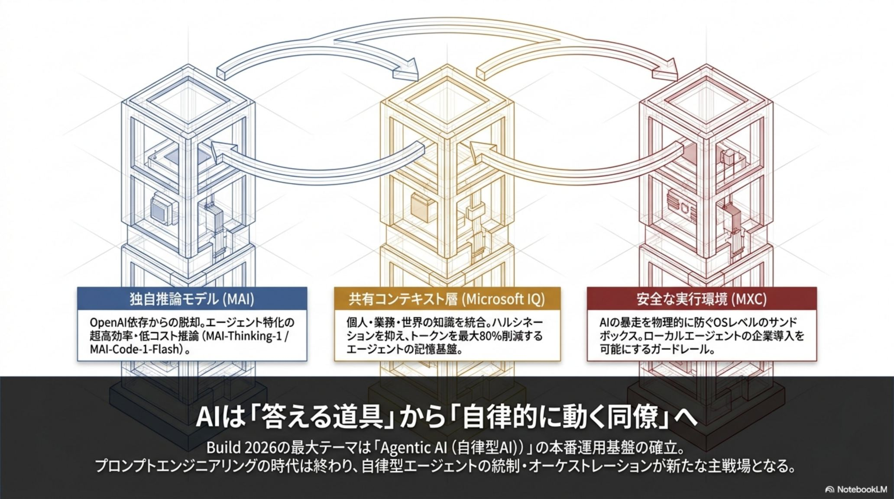
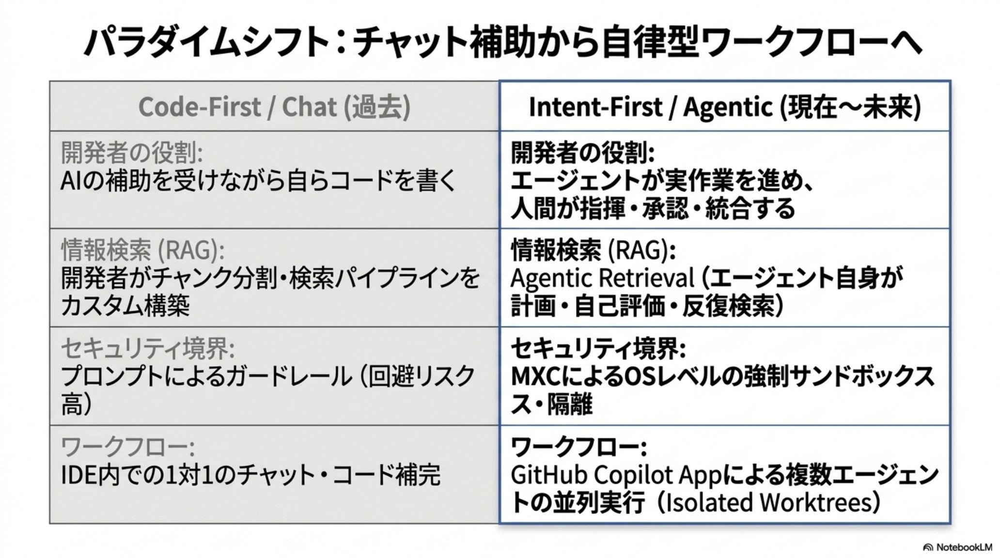
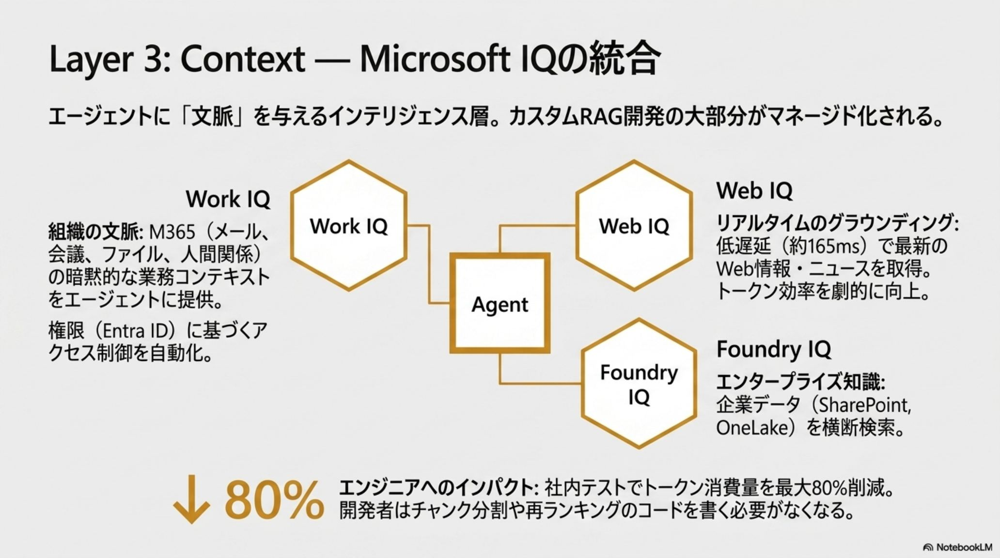
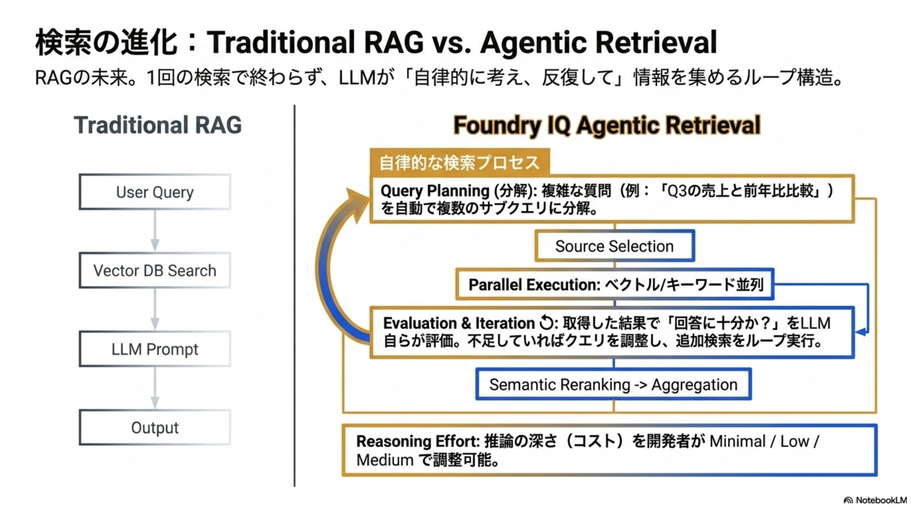
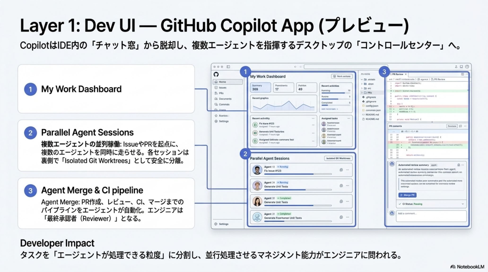
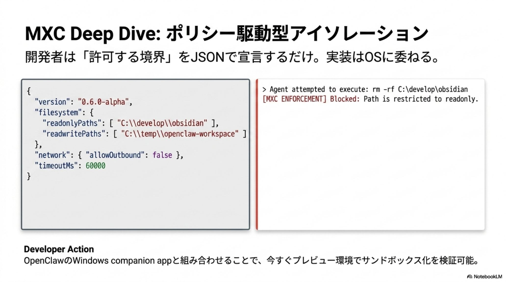
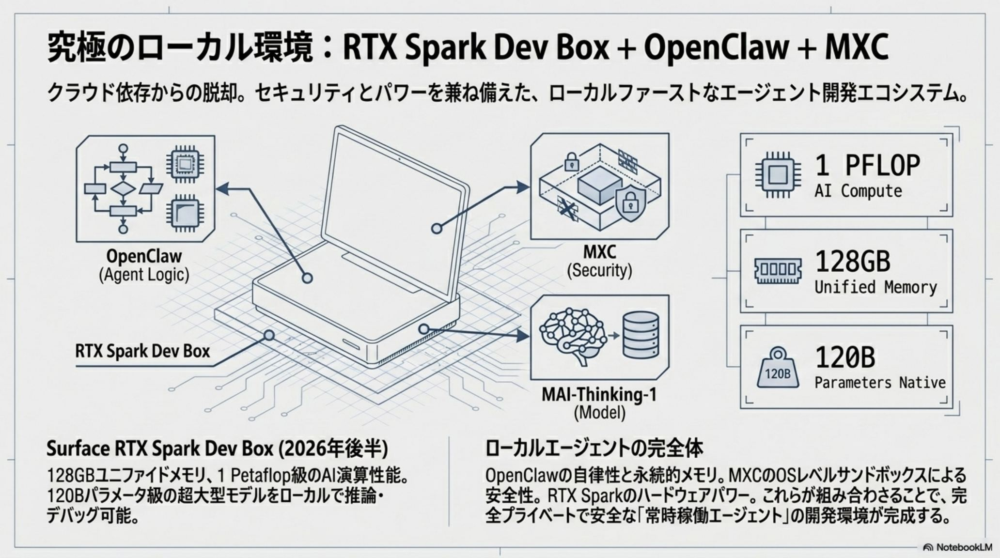
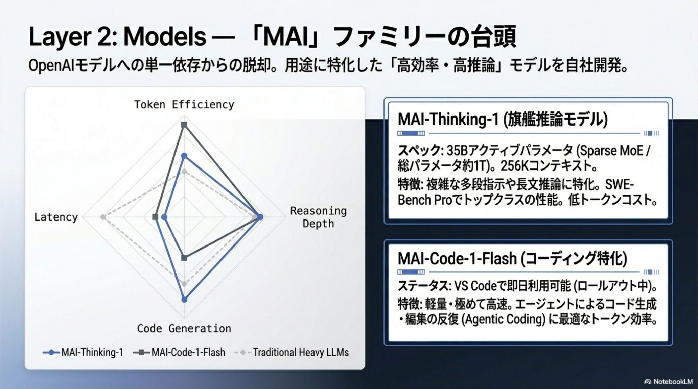
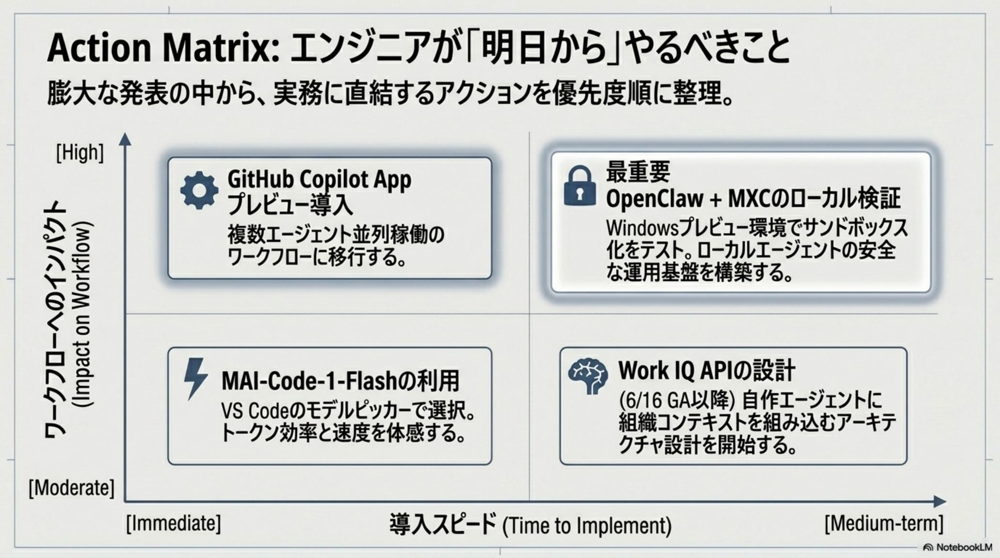

「答える道具」→
「自律する同僚」へ。


実装者から、エージェントの
「指揮者（Conductor）」へ。
パラダイムは、人間がコードを書く「Code-First」から、ユーザーの意図をシステムが直接解釈・実行する「Intent-First」へ移行した。エンジニアは命令型コーディングを手放し、「Prompt-as-Interface」と「制約ベースのオーケストレーション」でエージェントを統制する。新プラットフォーム Project Solara の BYOA（Bring Your Own Agent）は、特定モデルに縛られず最適なエージェントを自由に組み込む柔軟性を与える。
受動から自律へ。 従来の待機型AI 「Copilot」 のアーキテクチャ上の後継として、Microsoft は自律エージェントの新カテゴリ 「Autopilot」 を定義した。その第一号 「Scout」 は、人間と同様の権限・監査ログを持つ独立した主体として動く。
意味的な接地が精度を担保する。 Scout のような自律エージェントは、次節の Microsoft IQ によって意味的グラウンディング（Semantic Grounding）を得て初めて、実用的な精度で「先回りの実行」を成立させる。
- ▸Identity（Entra ID） — 匿名ではなく独自の Entra ID を所有。人間同様の権限と監査ログを持つ独立主体。
- ▸Autonomous（自律） — 定期的な Heartbeat（心拍） 監視で状況を判断し、人間の介入なしにバックグラウンドでタスクを進行。
- ▸Always-on（常時稼働） — コンテキストを継続保持し、メール・会議・ファイル操作を先回りして実行。
| 観点 | Code-FirstChat / 従来 | Intent-FirstAgentic / 現在 |
|---|---|---|
| 開発の起点 | コードと実装の記述 | 意図（Intent）の宣言と制約設計 |
| AIの接し方 | UIから指示しながら都度コードを書く | エージェント自身がコードを書き・実行・検証 |
| エンジニアの役割 | 実装者（Implementer） | エージェントの指揮者（Conductor） |
| 統制 | 命令型コーディング | 制約ベースのオーケストレーション ＋ BYOA |

4つのレイヤーで再定義された、
エージェント・ネイティブ基盤。
Build 2026 が示したのは、単独機能の寄せ集めではなく、Windows・Azure・Microsoft 365 を貫くフルスタックでの再設計だ。開発体験（Dev UI）／知識層（Context）／推論エンジン（Models）／実行境界（Security）が一枚のスタックとして噛み合い、自律エージェントを安全に成立させる。
GitHub Copilot App
IDE拡張から「開発プロセスの実行主体」へ。Git worktree で複数エージェントを並列実行し、Canvases で計画とコードを視覚的に統合する。
Microsoft IQ
組織・個人・世界の知識を統合する共通知識層。Work / Web / Foundry / Fabric IQ がエージェントに一貫したインテリジェンスを供給する。
MAI ＋ Aion ファミリー
OpenAI依存から脱却した自社最適化モデル。クラウド推論の MAI と、ローカル特化の Aion によるハイブリッド戦略。
＆ HW
MXC ＋ Surface RTX Spark
OSネイティブな隔離環境 MXC が暴走リスクを封じ、1 PFLOPS のローカル基盤が機密データのオンデバイス推論を可能にする。

エージェントのための、
共通知識層とRAGの進化。
自律エージェントが正確に動くには、高度なコンテキスト供給源が要る。Microsoft IQ は組織・個人・世界の知識を統合し、データの所在を抽象化する4つのコンポーネントで構成される。さらに Foundry IQ の Agentic Retrieval が、「1回で終わるRAG」を過去のものにする。
| Work IQImplicit Context | メール・会議・チャット・協働パターン | 組織内の暗黙の業務文脈や人間関係を解釈可能に。2026/6/16 GA予定。 |
| Web IQReal-time Web | リアルタイムWeb（ニュース・画像・動画） | サブ165ms の超低遅延取得。従来比 2.5× の高速グラウンディング。 |
| Foundry IQUnstructured | 非構造化データ・企業ナレッジベース | Agentic Retrieval により RAG パイプライン構築を自動化。 |
| Fabric IQStructured | OneLake 上の構造化データ | セマンティックモデルに基づき、大規模データに一貫した意味基盤を提供。 |
LLMが自ら検索計画を立てる。 Agentic Retrieval は、複雑な質問をサブクエリに分解する Query Planning、取得結果を自己評価し不足があれば再検索する Evaluation & Iteration のループ構造を持つ。
推論深度を制御できる。 開発者は検索計画で「どれだけ考えさせるか」を minimal low medium の3段階で調整し、コストとレイテンシを最適化。不要な読み込みを排除し、トークン消費を最大80%削減する。
Query Planning
複雑な質問をサブクエリへ分解。
Iterate
結果をLLMが自己評価し再検索。
Reasoning Effort
推論深度を3段階で制御。
−80% Tokens
不要な読み込みを排除。


書く側から、
検証・統合する側へ。
GitHub Copilot App は、単なるIDE拡張から「開発プロセスの実行主体」へ昇華した。内部で Git worktree を使い、複数のエージェントセッションを物理的に分離して並列実行する。リファクタリング・Issue解決・ドキュメント生成を、同時並行で別々のエージェントに任せられる。
Agent Merge。 Issue起票からPR作成、CI実行、レビュー、マージまでをエージェントが自動化する。人間は「コードを書く」側から、計画とコードを Canvases（双方向作業面） 上で視覚的に確認し「検証・統合する」側へ完全にシフトする。
この開発プロセス自動化の安全性を、次節の MXC がOSレベルで担保する。自由な並列実行と、確実な実行境界は両立する。
Issue
起票内容をエージェントが解釈。
PR / Code
worktree で並列に編集・生成。
CI / Review
テスト実行と自己レビュー。
Merge
人は Canvases で検証・統合。

暴走リスクを封じる、
OSネイティブな実行境界。
自律エージェントの「暴走リスク」に対し、Microsoft は OSネイティブな隔離環境 MXC（Microsoft Execution Containers） でセキュリティの概念を再定義した。エージェントの挙動を JSONベースの「宣言的ポリシー」 で制限し、ファイルシステム・ネットワーク・プロセス・クリップボード・UIへのアクセスをOSが強制的に隔離する。
隔離レベルはスケールする。 プロセス分離（Process isolation）からセッション分離（Session isolation）、さらには Micro-VM へと、リスクに応じて段階的に強化できる。
ガバナンスをバイパスさせない。 MXC は Agent 365 / Purview と直結し、エージェントが 「感度ラベル（Sensitivity Labels）」や DLP（データ損失防止） ポリシーをすり抜けることを物理的に防止する。
OpenClaw との統合。 OSS の OpenClaw が Windows 上でネイティブ動作し MXC と統合。ローカルでの自由な実験と、Intune / Entra ID を通じた企業ガバナンスを両立させる。
- ▸宣言的ポリシー — JSONでファイル／ネット／プロセス／クリップボード／UIアクセスを定義。
- ▸段階的隔離 — Process → Session → Micro-VM へリスクに応じてスケール。
- ▸Purview 直結 — 感度ラベル・DLP のバイパスを物理的に防止。
- ▸OpenClaw 統合 — ローカル実験と Intune / Entra ID ガバナンスを両立。
OSが強制隔離するため、エージェントが許可外のリソースへ到達できない。
Agent 365 と連携し、誰の／どのエージェントが何を実行したかを追跡。
Intune / Entra ID 下で、ローカルの自由とエンタープライズ統制を両立。

OpenAI依存からの脱却、
MAI ＋ Aion のハイブリッド。
Microsoft は自社最適化を象徴する MAI ファミリー と、ローカル特化の Aion ファミリー によるハイブリッド戦略を展開した。さらに Frontier Tuning は、組織データからドメイン知識だけでなく「仕事のやり方」そのものを学習させ、超専門家エージェントの構築を可能にする。
MAI-Thinking-1
アクティブパラメータを35Bに抑えつつ256Kのロングコンテキストを処理。SWE-Bench Pro でトップクラスの論理推論を示す。
MAI-Code-1-Flash
エージェントによる高速なリファクタリングに最適化された軽量コーディングモデル。反復の速さが武器。
Aion 1.0 Plan
ローカル推論に特化。特にローカルでのツール呼び出し（Tool-calling）で最高レベルの効率を誇る。
クラウドに頼らず、デスクサイドで回す。 Surface RTX Spark Dev Box は 128GB ユニファイドメモリ と 1 PFLOPS の演算性能を備え、120Bパラメータ級の大規模モデルをローカルで完全に動作させる。
金融・医療など機密性の高い領域で、ネットワーク遅延やプライバシー懸念のない「ローカル・ロングコンテキスト」の実験が可能に。クラウドのコストやクォータを気にせず、推論サイクルを高速に回せる。


道具として「使う」から、
エージェントを「統制・運用」する。
Build 2026 が示したのは、AIを「道具」として使う時代から、複数のエージェントを「指揮・統制・運用」する時代への移行だ。エンジニアに求められるのは、コードを書く技術以上に「意図（Intent）を設計し、安全な実行境界（MXC）を定義する能力」である。
ローカル推論を検証
Edge Insider を導入し Aion でローカル推論とツール呼び出しを検証。GitHub Copilot App（Technical Preview）で並列エージェントと Canvases を体験する。
Work IQ を組み込む
2026年6月16日の GA に合わせ、Work IQ API を自作エージェントのコンテキスト層として組み込み、トークン削減効果を測定する。
安全な隔離をPoC
OpenClaw ＋ MXC で、JSONポリシーによる安全な隔離環境を PoC として構築。企業導入のためのセキュリティ基準を策定する。

「作る」対象から、「安全に運用し、共生する」対象へ。— Microsoft Build 2026 / The Agentic Blueprint · 2026·06·04
出典と関連リファレンス。
本スライドは Microsoft Build 2026 の発表に基づく、AIエンジニア向けの技術解説。確定情報・GA日程は各公式ドキュメントでの裏取りを推奨する。